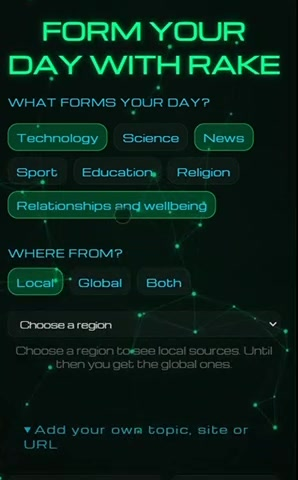
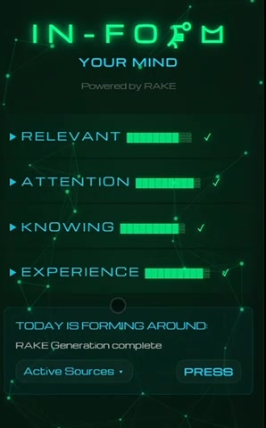
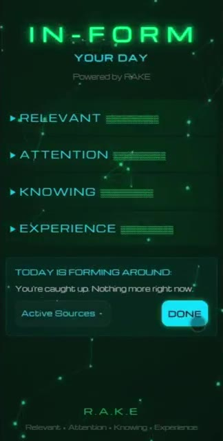

TODAY IS FORMING AROUND
IN-FORM
A small daily orientation tool. You choose what forms your day. It shows up to three items in each of four channels, then lets you stop.
Free, no accounts, no ads. Runs on your own computer, or opens on your phone. It is not a feed: when you have seen everything your sources have, it says so and ends.
The computer download is Windows only for now, and is not code-signed, so Windows may warn you the first time. The phone version is a web app you add to your home screen; both sets of steps are below.
SEE IT IN ACTION



Recorded from the real app. The headlines change every day.
THE FOUR CHANNELS (R.A.K.E)
- RELEVANT
- What is current and close to the things you chose, from the last 48 hours.
- ATTENTION
- What may need your awareness or action.
- KNOWING
- What may deepen your understanding.
- EXPERIENCE
- What may be worth exploring or taking part in.
WHAT MAKES IT DIFFERENT
- You choose the topics. Technology, Science, News, Sport, Education, Religion, Relationships and wellbeing, plus, in the Windows app, your own topics, sites and feeds. News, Sport and Education can be local, global or both.
- It ends. Three items per channel, each shown once. When you are caught up, PRESS becomes DONE.
- It says why. Tap Why? on any item for a plain-language reason it landed where it did.
- It learns gently. Opening, marking Useful and dismissing nudge the order. Learning alone never hides anything.
- It is honest when something breaks. If a source cannot be reached it says which one, and never shows placeholder content.
INSTALL (WINDOWS)
- Download
IN-FORM-Setupfrom the latest release and run it. It installs for you only, with no administrator prompt, and adds an IN-FORM icon to the Start menu (and the desktop, if you tick the box). - If Windows says Windows protected your PC, choose More info, then Run anyway. Do this only for a file from the official release page. Each release lists a SHA-256 checksum so you can check your download.
- Click the IN-FORM icon. It opens in your browser, with no black window. Stop IN-FORM in the Start menu ends it; otherwise it stops when you sign out.
Prefer no installer? The release also has a portable zip: extract it and double-click start.bat. The full zip is about 34 MB; the -lite zip is about 2 MB and needs Node.js 22.13 or newer.
INSTALL (PHONE)
- Open in-form.onrender.com on your phone. Use Safari on iPhone, or Chrome on Android.
- iPhone: tap Share, then Add to Home Screen. Android: open the browser menu, then Install app or Add to Home screen.
- Open IN-FORM from the new icon. It opens full screen like an app. Your topics and history are kept on your phone.
The phone version runs on a free host that goes to sleep when nobody is using it. If it has been quiet for a while, the first press can take about a minute, and IN-FORM tells you it is waking the server up. After that it is quick.
YOUR DATA AND PRIVACY
- Windows app: your setup and history stay on your computer. There are no accounts and no analytics. It answers only your own computer, so other devices on your network cannot reach it.
- Phone version: your setup and history stay on your phone. When you press, IN-FORM's server looks up the news for your topics and keeps nothing: there are no accounts and no analytics, and what your phone sends is not written to any log. The server does see your topics, region and history for the moment it takes to answer.
- Both contact news sources: Google News searches for topics, plus any sites or feeds you add in the Windows app. The page fonts are bundled, so nothing is requested from other sites.
- Windows app only: once a day it asks GitHub whether a newer release exists, so it can tell you. That request carries nothing about you or your setup. You can turn it off by setting
INFORM_UPDATE_CHECK=off.
KNOWN LIMITS
- Built for $0. Designed, built and deployed using free hosting and local tools, so expect occasional free-tier wake-up delays (very little in recent tests), no paid cloud AI or background services, and a few rough edges where free tiers draw the line.
- English-language sources only. The computer download is Windows only, for now.
- The phone version has the built-in topics only: no custom sites or feeds. It runs on a free host that can be slow to wake and may be paused if it is used heavily.
- The channels come from keyword cues, not artificial intelligence, so an item is sometimes in the wrong channel.
- Topics use Google News' public search feed, which is not an official interface and could change.
TELL ME WHAT YOU THINK
IN-FORM is new, and what real people notice matters more than anything I can test myself. If something is confusing, broken or missing, or just worked well, please say so. Short is fine.
This opens a GitHub form, so you need a free GitHub account. The page is public, so please leave out personal details.